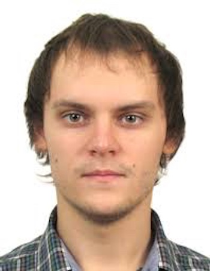

Максим Владимирович Рахуба
Аспирант
Научный сотрудник
Сколковский институт науки и технологий
Загрузить резюмеНаучные интересы
Малоранговые тензорные аппроксимации и тензорные сети, применение современных численных методов в квантовой химии.
Основные публикации с 2013 г.